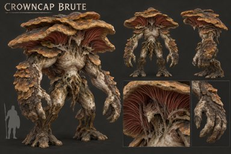
Crowncap Brute
Fungal Forest · Creature
Design brief
huge layered crown, armored fungal shoulders, thick forelimbs, exposed gills beneath cap; sweeping control attacks and heavy stagger

The First Bloom
Fungal Forest · Boss
Design brief
A singular ancient fungal sovereign: towering irregular overlapping crown shelves, exposed living gill cathedral beneath, mature buttress-root legs and broad sweeping arms. More hierarchical asymmetric crown than the regular brute; no crown jewelry.
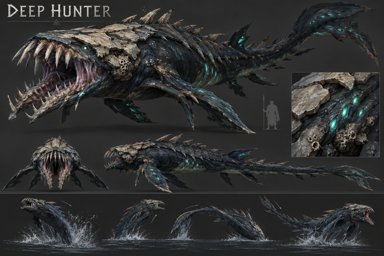
Deep Hunter
Blackwater Deep · Creature
Design brief
hero predator anatomy, 7+ body/tail deformation bones, breach/turn/attack sequences without rigid-body fish motion

The Blackwater Maw
Blackwater Deep · Boss
Design brief
An ancient abyssal predator with a cavernous trap jaw, powerful armored head and muscular tapering aquatic body, scarred fin membranes, subdued sensory light organs. The giant mouth is the central identity, not an oversized fish sphere.
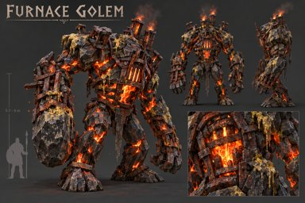
Furnace Golem
Sulfurous Wastes · Creature
Design brief
basalt armor slabs over visible molten seams/core; armor-break visual states and heavy impact animations

The Furnace Heart
Sulfurous Wastes · Boss
Design brief
A monumental geological furnace organism: massive irregular basalt armor shell around a recessed exposed molten heart, broken sacrificial outer plates, heat-scarred hammer forearms and functional fissure vents. No cute metal robot or twin toy chimneys.
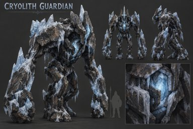
Cryolith Guardian
Frozen Caverns · Creature
Design brief
ancient mineral/ice armor, internal frozen core; deliberate construct motion distinct from Furnace Golem

The White Silence
Frozen Caverns · Boss
Design brief
An ancient glacier guardian: tall solemn mineral body with layered compressed ice shelves, long deliberate arms, frozen hollow core and frost-eroded monolithic head. Asymmetric glacial geology; distinct proportions from Furnace Heart.
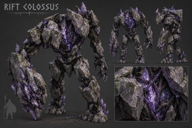
Rift Colossus
Fracture Zones · Creature
Design brief
large destructible-looking masses and exposed binding core; stagger/displacement body language

The Rift Titan
Fracture Zones · Boss
Design brief
An enormous segmented fault-line guardian: offset interlocking geological masses suspended around an exposed binding core, bridge-like load-bearing limb segments, fractured monolithic head. Deliberate negative spaces, suspended pieces have coherent relationships; no random orbiting rubble.
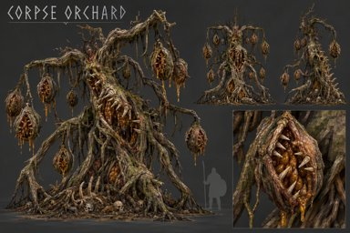
Corpse Orchard
Great Decay · Creature
Design brief
major rooted organism with trunk, mouths/pods/tendrils and explicit spawn sockets; collapse/death is a major animation event

The Carrion Crown
Great Decay · Boss
Design brief
A gigantic rooted colony, broad hollow trunk and crown of predatory flower-mouths, hanging seed pods, branching tendrils and root buttresses. A commanding single silhouette with subordinate mouths; visibly an old organism, not several identical flowers placed in a row.
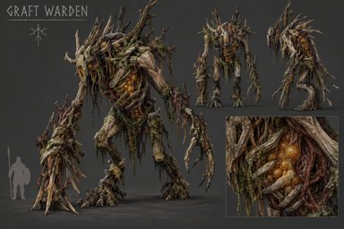
Graft Warden
Great Decay · Creature
Design brief
fused bone/biomass armor, multiple asymmetrical graft structures, visible vulnerable tissue
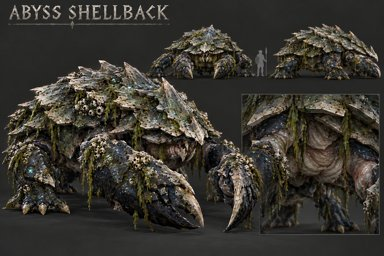
Abyss Shellback
Blackwater Deep · Creature
Design brief
layered shell plates, vulnerable underside/joints, heavy claws; brace/guard and amphibious locomotion
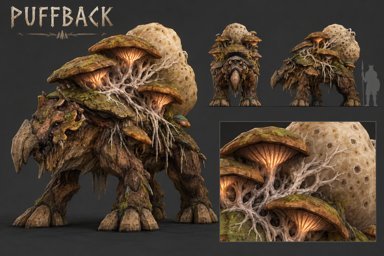
Puffback
Fungal Forest · Creature
Design brief
massive spore bladder/back growth and heavy feet; graze/root, warning display, charge, defensive inflation/puff
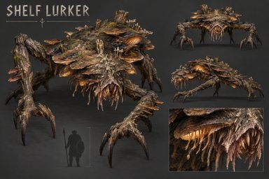
Shelf Lurker
Fungal Forest · Creature
Design brief
long gripping limbs, flattened torso, downward mouth/sensory crown; cling, lateral crawl, drop ambush
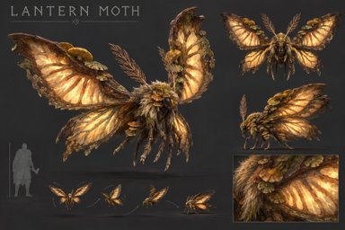
Lantern Moth
Fungal Forest · Creature
Design brief
four luminous wing surfaces, fuzzy thorax silhouette, antennae; convincing hover/bank/landing
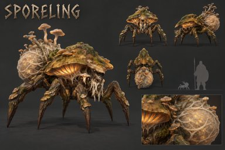
Sporeling
Fungal Forest · Creature
Design brief
fungal abdomen/cap, six articulated legs, visible spore sac; swarm scuttle and death-puff anticipation
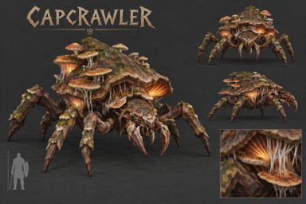
Capcrawler
Fungal Forest · Creature
Design brief
low armored cap carapace, mandibles, 6–8 legs; cover-height locomotion and frontal strike
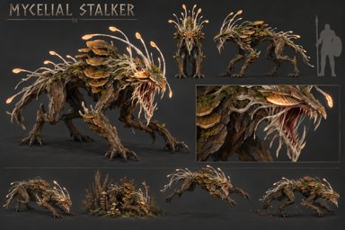
Mycelial Stalker
Fungal Forest · Creature
Design brief
lean fungal predator, mycelial sensory fronds, opening jaw; crouch, conceal-idle, pounce, failed-pounce retreat
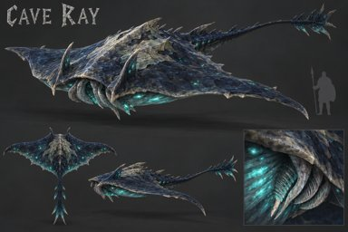
Cave Ray
Blackwater Deep · Creature
Design brief
broad membrane deformation, long tail, subtle luminous underside
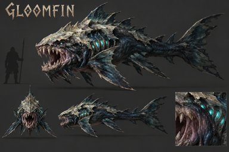
Gloomfin
Blackwater Deep · Creature
Design brief
muscular tail, predatory jaw, pack-readable dorsal silhouette
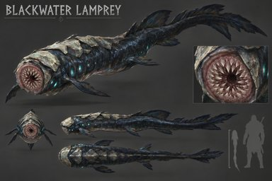
Blackwater Lamprey
Blackwater Deep · Creature
Design brief
circular toothed mouth modeled in geometry, flexible body; attach/latch animation required
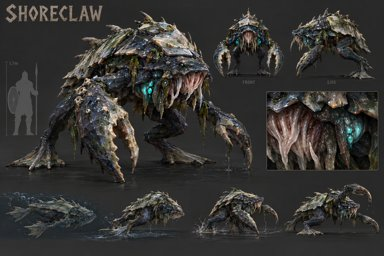
Shoreclaw
Blackwater Deep · Creature
Design brief
shell, asymmetric claws, amphibious legs; swim-to-land transition
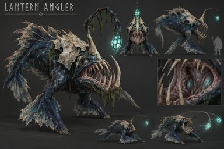
Lantern Angler
Blackwater Deep · Creature
Design brief
articulated lure, expanding jaw/throat, light organ; lure-idle and pressure/ranged tell
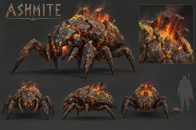
Ashmite
Sulfurous Wastes · Creature
Design brief
heat-cracked shell, fast leg cycle, vent-scavenging idle
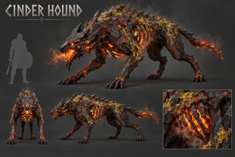
Cinder Hound
Sulfurous Wastes · Creature
Design brief
lean heat-adapted predator, venting mouth/ribs; pack sprint and bite/lunge
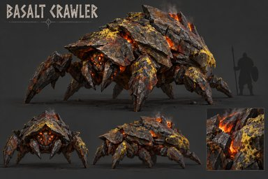
Basalt Crawler
Sulfurous Wastes · Creature
Design brief
overlapping basalt plates and protected face; guard/turn/ram
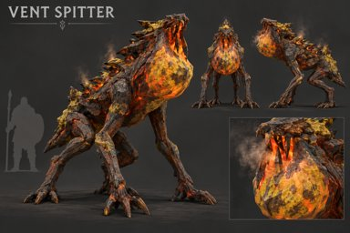
Vent Spitter
Sulfurous Wastes · Creature
Design brief
visible pressure sac and articulated throat/mouth; charge-up must physically inflate before ranged attack
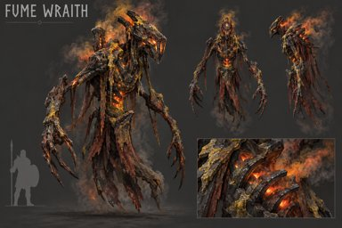
Fume Wraith
Sulfurous Wastes · Creature
Design brief
central readable body/core plus cloth/smoke appendage bones; must not be only a particle cloud
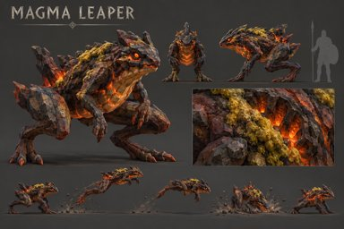
Magma Leaper
Sulfurous Wastes · Creature
Design brief
oversized hind limbs and heat-resistant ventral plates; crouch, leap arc, landing recovery
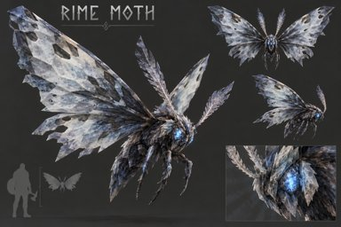
Rime Moth
Frozen Caverns · Creature
Design brief
related rig, distinct pale crystalline wing anatomy rather than Lantern Moth recolor
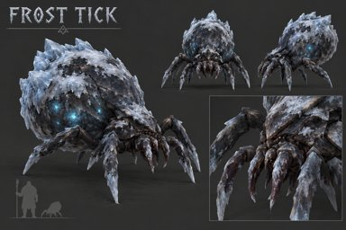
Frost Tick
Frozen Caverns · Creature
Design brief
grasping legs, expandable abdomen; leap/latch tells
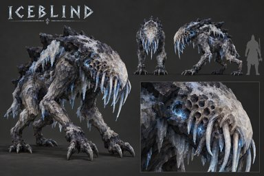
Iceblind
Frozen Caverns · Creature
Design brief
eyeless head, sensory pits/fronds, heavy neck; listening/search animations essential
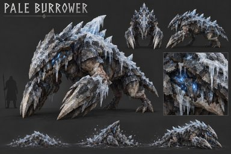
Pale Burrower
Frozen Caverns · Creature
Design brief
digging forelimbs, wedge skull, ice-shedding back; emerge/submerge transitions
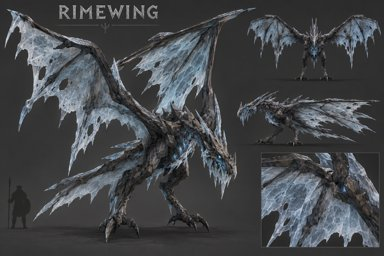
Rimewing
Frozen Caverns · Creature
Design brief
translucent/crystalline membrane structures, talons; wall/perch-to-glide lifecycle
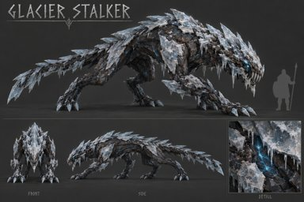
Glacier Stalker
Frozen Caverns · Creature
Design brief
long low predator with ice-breaking camouflage plates; patient compressed idle and explosive opener
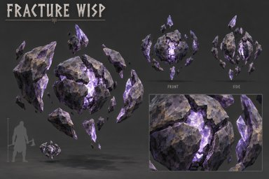
Fracture Wisp
Fracture Zones · Creature
Design brief
modeled fractured core with orbiting pieces; event-hostile state visually readable
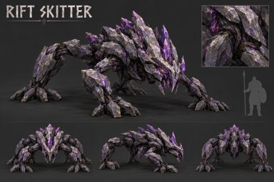
Rift Skitter
Fracture Zones · Creature
Design brief
broad gripping feet and low center of mass; steep-surface presentation
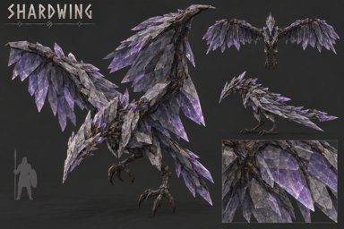
Shardwing
Fracture Zones · Creature
Design brief
mineral wing spars and membrane/crystal planes; dive and ridge landing
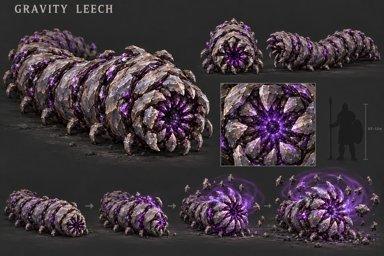
Gravity Leech
Fracture Zones · Creature
Design brief
radial gripping anatomy and expandable field organ; pull-field charge animation
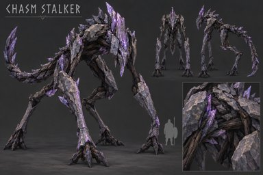
Chasm Stalker
Fracture Zones · Creature
Design brief
extremely long load-bearing limbs, compact torso, counterbalancing tail; narrow-route attacks
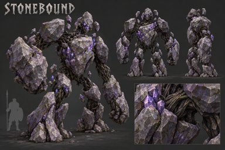
Stonebound
Fracture Zones · Creature
Design brief
5–9 distinct mineral masses around core; push telegraph expressed by segment compression/expansion
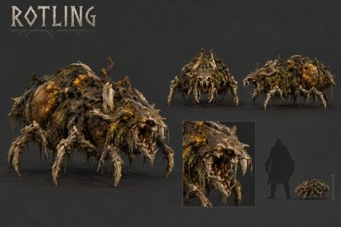
Rotling
Great Decay · Creature
Design brief
asymmetrical biomass scavenger, biting mouth and grasping limbs
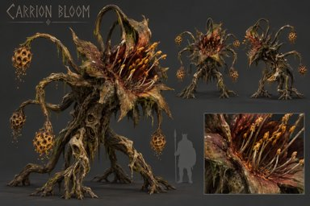
Carrion Bloom
Great Decay · Creature
Design brief
rooted flower-mouth, tendrils, spore organs; ranged attack grows visibly from body
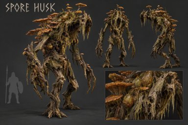
Spore Husk
Great Decay · Creature
Design brief
consumed humanoid-like shell but non-human silhouette; fungus/biomass must alter gait and joint range
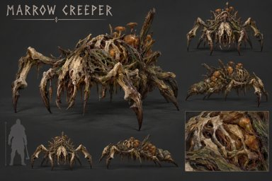
Marrow Creeper
Great Decay · Creature
Design brief
bone-supported low body, hooked limbs, flexible abdomen
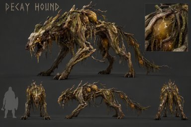
Decay Hound
Great Decay · Creature
Design brief
corrupted pack predator with contamination sacs/tendrils; distinct from Cinder Hound geometry